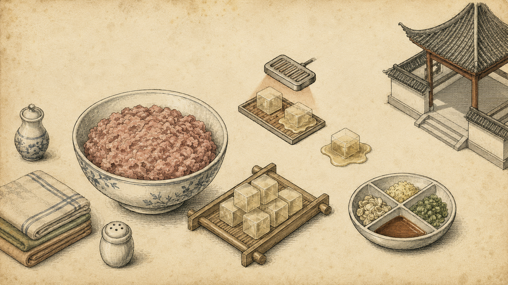

← Bitepedia

鲜肉馅 · 图鉴
THE SECRET OF THE SAVORY FILLING
猪后腿绞肉
Minced Pork Leg
皮冻方
3 : 7 Fat-to-Lean Ratio
三十度化为汤汁
Pork Skin Aspic
三味提鲜
Collagen melts at 30°C
姜末
The Aromatics
葱水
Minced Ginger
绍兴黄酒
Scallion Water
肉 · 冻 · 香 — 南翔小笼的鲜味三联式
A trinity of richness folded into every wrapper
← Back to 小笼包